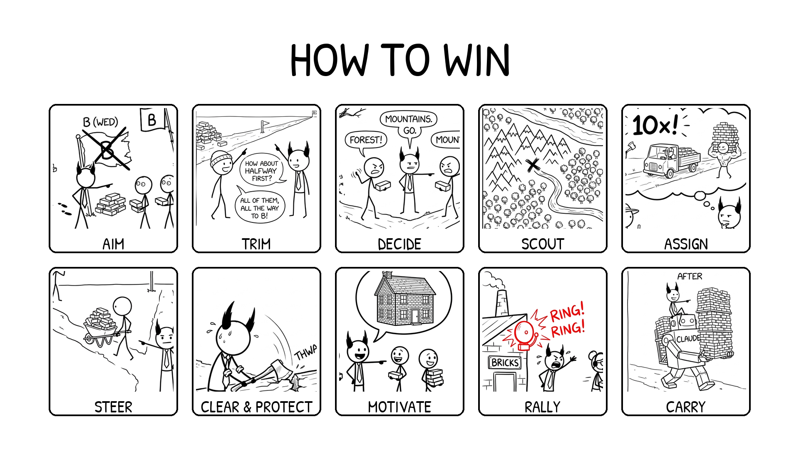

<section id="how-to-win" data-transition="fade" style="display:flex; flex-direction:row; align-items:center; justify-content:center; padding:0; background:#fcfcfa">
  
<p style="position:absolute;left:0;bottom:10px;width:1920px;margin:0;text-align:center;font-family:'Patrick Hand', 'Trebuchet MS', sans-serif;font-size:22px;color:#8a8f98">Copyright Dobromir Montauk 2026</p>
<aside>Each of these can be a whole course by itself. We're just going to lightly touch each one &amp; give some examples so you can pattern match your activities to the bucket they fall into.&nbsp;</aside>
</section>
